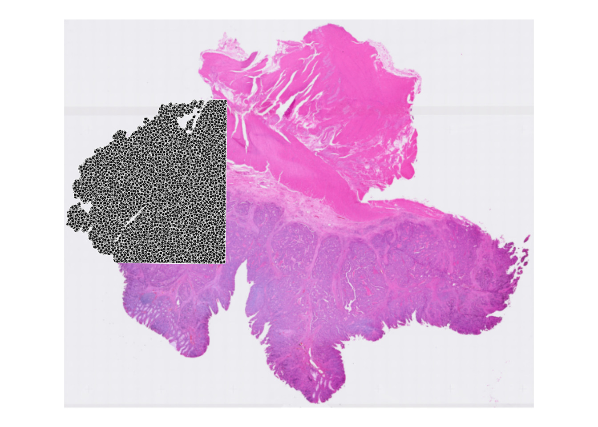
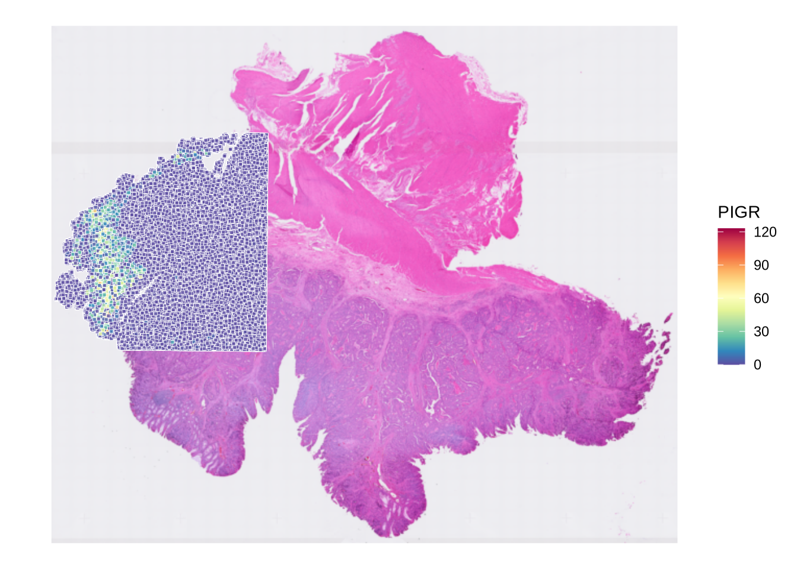
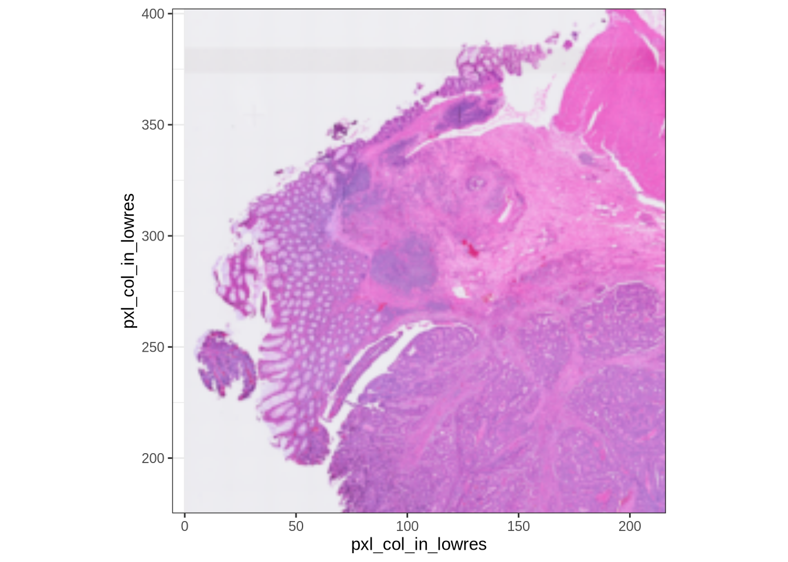
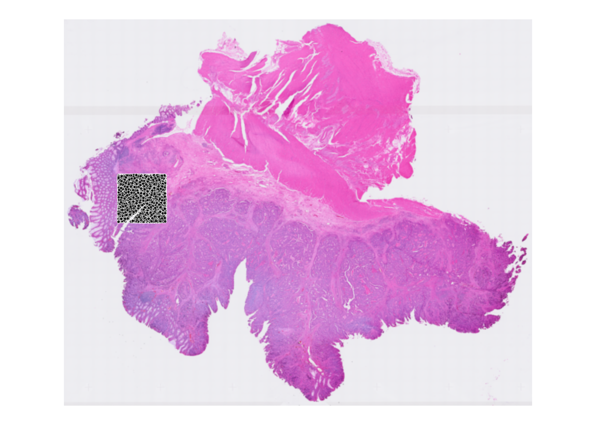

![]()
library(SpatialExperiment)
library(VisiumIO)
library(arrow)
library(qs2)
library(ggspavis)
library(patchwork)
library(dplyr)
library(arrow)
library(scuttle)
library(HDF5Array)1. Preparation
Load packages
Load Data
My data is stored in the following path. Please change the path accordingly.
data_path <- "/home/kim/workspace/spatial_transcriptomics/data"visium_data_path <- file.path(data_path, "raw_colon_cancer")
hdf_data_path <- file.path(data_path, "hdf5_colon_cancer")Visium HD spots are arranged as 2 × 2 µm squares. Space Ranger outputs data at three bin sizes: 2 µm, 8 µm, and 16 µm. Smaller bin sizes provide higher spatial resolution but result in greater data sparsity. In this tutorial, we use a bin size of 16 µm.
spe <- TENxVisiumHD(
spacerangerOut = visium_data_path,
processing = "filtered",
format = "h5",
images = "lowres",
bin_size = "016"
) |>
import()Taking a peek at the data
dim(spe)[1] 18085 127809The dataset contains 127,809 spots and 18,085 genes.
Because SpatialExperiment is an extension of SingleCellExperiment, it uses a similar data structure: the count matrix is organized with genes as rows and spots as columns. If you are more familiar with Python’s AnnData and scanpy, note that this orientation is the transpose of what you may expect.

Metadata for spots and genes can be accessed using colData(spe) and rowData(spe), respectively.
# Spot metadata
head(colData(spe))DataFrame with 6 rows and 6 columns
barcode in_tissue array_row array_col
<character> <integer> <integer> <integer>
s_016um_00052_00082-1 s_016um_00052_00082-1 1 52 82
s_016um_00010_00367-1 s_016um_00010_00367-1 1 10 367
s_016um_00163_00399-1 s_016um_00163_00399-1 1 163 399
s_016um_00238_00388-1 s_016um_00238_00388-1 1 238 388
s_016um_00144_00175-1 s_016um_00144_00175-1 1 144 175
s_016um_00297_00147-1 s_016um_00297_00147-1 1 297 147
bin_size sample_id
<character> <character>
s_016um_00052_00082-1 016 sample01
s_016um_00010_00367-1 016 sample01
s_016um_00163_00399-1 016 sample01
s_016um_00238_00388-1 016 sample01
s_016um_00144_00175-1 016 sample01
s_016um_00297_00147-1 016 sample01# Gene metadata
head(rowData(spe))DataFrame with 6 rows and 3 columns
ID Symbol Type
<character> <character> <factor>
ENSG00000187634 ENSG00000187634 SAMD11 Gene Expression
ENSG00000188976 ENSG00000188976 NOC2L Gene Expression
ENSG00000187961 ENSG00000187961 KLHL17 Gene Expression
ENSG00000187583 ENSG00000187583 PLEKHN1 Gene Expression
ENSG00000187642 ENSG00000187642 PERM1 Gene Expression
ENSG00000188290 ENSG00000188290 HES4 Gene ExpressionSince the current row names are Ensembl ID, we update them to gene symbols for easier downstream analysis.
rownames(spe) <- uniquifyFeatureNames(
ID = rowData(spe)$ID,
names = rowData(spe)$Symbol
)The count matrix itself can be accessed using counts(spe).
head(counts(spe))<6 x 127809> sparse DelayedMatrix object of type "integer":
s_016um_00052_00082-1 ... s_016um_00144_00329-1
SAMD11 0 . 0
NOC2L 0 . 0
KLHL17 0 . 0
PLEKHN1 0 . 0
PERM1 0 . 0
HES4 0 . 0One of the data specific to spatial transcriptomics is the spatial coordinates of each spot, which can be accessed using spatialCoords(spe).
head(spatialCoords(spe)) pxl_col_in_fullres pxl_row_in_fullres
s_016um_00052_00082-1 4592.154 33582.69
s_016um_00010_00367-1 21222.637 36191.27
s_016um_00163_00399-1 23176.077 27266.75
s_016um_00238_00388-1 22574.200 22877.49
s_016um_00144_00175-1 10076.365 28256.34
s_016um_00297_00147-1 8523.582 19299.57We can also visualize the spatial distribution of spots on the tissue slide using the plotVisium() function from the ggspavis package.
plotVisium(spe)
Based on the plot, we can see the tissue section and the spots that map to the tissue. It seems that the data is already filtered to retain only spots that map to the tissue. We can confirm this by checking the in_tissue column in the colData(spe).
table(spe$in_tissue)
1
127809 We can also visualize the expression of a specific gene on the tissue slide. For example, we can visualize the expression of the gene PIGR.
plotVisium(
spe,
annotate = "PIGR",
assay = "counts",
point_size = 1,
point_shape = 22
)
Subsetting the data
Since the dataset is large, we will subset a smaller region for faster processing. To decide which region to subset, we zoom in on the tissue section where the spots are mapped using zoom = TRUE option. Also, we show the axes using show_axes = TRUE option to help us decide the bounding box coordinates.
plotVisium(spe, spots = FALSE, zoom = TRUE, show_axes = TRUE)
The x and y axes values denotes scalefactor * spatialCoords. From the plot, we will subset the bounding box with the following coordinates:
- xmin: 70
- ymin: 200
- xsize: 60
- ysize: 60
bb_xmin <- 70
bb_ymin <- 200
bb_xsize <- 60
bb_ysize <- 60
getSubsetMask <- function(spe, xmin, ymin, xsize, ysize) {
mask <-
spatialCoords(spe)[, 1] * scaleFactors(spe) > xmin &
spatialCoords(spe)[, 1] * scaleFactors(spe) < (xmin + xsize) &
spatialCoords(spe)[, 2] * scaleFactors(spe) > ymin &
spatialCoords(spe)[, 2] * scaleFactors(spe) < (ymin + ysize)
return(mask)
}
spe <- spe[, getSubsetMask(spe, bb_xmin, bb_ymin, bb_xsize, bb_ysize)]
dim(spe)[1] 18085 14207After subsetting, there are 14,207 spots remaining. We can also visualize the subsetted region
plotVisium(spe, spots = TRUE)
Save the subsetted data
saveHDF5SummarizedExperiment(
spe,
dir = hdf_data_path,
prefix = "01_subsetted_",
replace = TRUE,
chunkdim = NULL,
level = NULL,
as.sparse = NA,
verbose = NA
)
Expand for Session Info
sessionInfo()R version 4.5.2 (2025-10-31)
Platform: x86_64-conda-linux-gnu
Running under: Ubuntu 22.04.4 LTS
Matrix products: default
BLAS/LAPACK: /home/kim/workspace/spatial_transcriptomics/.pixi/envs/default/lib/libopenblasp-r0.3.30.so; LAPACK version 3.12.0
locale:
[1] LC_CTYPE=en_US.UTF-8 LC_NUMERIC=C
[3] LC_TIME=de_CH.UTF-8 LC_COLLATE=en_US.UTF-8
[5] LC_MONETARY=de_CH.UTF-8 LC_MESSAGES=en_US.UTF-8
[7] LC_PAPER=de_CH.UTF-8 LC_NAME=C
[9] LC_ADDRESS=C LC_TELEPHONE=C
[11] LC_MEASUREMENT=de_CH.UTF-8 LC_IDENTIFICATION=C
time zone: Europe/Zurich
tzcode source: system (glibc)
attached base packages:
[1] stats4 stats graphics grDevices utils datasets methods
[8] base
other attached packages:
[1] HDF5Array_1.38.0 h5mread_1.2.0
[3] rhdf5_2.54.0 DelayedArray_0.36.0
[5] SparseArray_1.10.0 S4Arrays_1.10.0
[7] abind_1.4-8 Matrix_1.7-3
[9] scuttle_1.20.0 dplyr_1.1.4
[11] patchwork_1.3.2 ggspavis_1.16.0
[13] ggplot2_4.0.0 qs2_0.1.5
[15] arrow_22.0.0 VisiumIO_1.6.0
[17] TENxIO_1.12.0 SpatialExperiment_1.20.0
[19] SingleCellExperiment_1.32.0 SummarizedExperiment_1.40.0
[21] Biobase_2.70.0 GenomicRanges_1.62.0
[23] Seqinfo_1.0.0 IRanges_2.44.0
[25] S4Vectors_0.48.0 BiocGenerics_0.56.0
[27] generics_0.1.4 MatrixGenerics_1.22.0
[29] matrixStats_1.5.0
loaded via a namespace (and not attached):
[1] tidyselect_1.2.1 farver_2.1.2 R.utils_2.13.0
[4] S7_0.2.0 fastmap_1.2.0 stringfish_0.17.0
[7] digest_0.6.37 lifecycle_1.0.4 magrittr_2.0.4
[10] compiler_4.5.2 rlang_1.1.6 tools_4.5.2
[13] yaml_2.3.10 knitr_1.50 labeling_0.4.3
[16] htmlwidgets_1.6.4 bit_4.6.0 RColorBrewer_1.1-3
[19] BiocParallel_1.44.0 withr_3.0.2 purrr_1.1.0
[22] R.oo_1.27.1 grid_4.5.2 beachmat_2.26.0
[25] Rhdf5lib_1.32.0 scales_1.4.0 dichromat_2.0-0.1
[28] cli_3.6.5 rmarkdown_2.30 RcppParallel_5.1.11-1
[31] tzdb_0.5.0 rjson_0.2.23 BiocBaseUtils_1.12.0
[34] assertthat_0.2.1 parallel_4.5.2 XVector_0.50.0
[37] vctrs_0.6.5 jsonlite_2.0.0 hms_1.1.4
[40] bit64_4.6.0-1 ggrepel_0.9.6 magick_2.9.0
[43] ggside_0.4.0 glue_1.8.0 codetools_0.2-20
[46] gtable_0.3.6 BiocIO_1.20.0 tibble_3.3.0
[49] pillar_1.11.1 htmltools_0.5.8.1 rhdf5filters_1.22.0
[52] R6_2.6.1 evaluate_1.0.5 lattice_0.22-7
[55] readr_2.1.5 R.methodsS3_1.8.2 Rcpp_1.1.0
[58] xfun_0.53 pkgconfig_2.0.3 Citation
BibTeX citation:
@online{kim2025,
author = {Kim, Youngjun},
title = {Spatial {Transcriptomics} {Data} {Analysis} {Tutorial} 01:
{Preparation}},
date = {2025-12-18},
url = {https://yjkim93.github.io/posts/2025-12-18-spatial-transcriptomics-01-preparation/},
langid = {en}
}
For attribution, please cite this work as:
Kim, Youngjun. 2025. “Spatial Transcriptomics Data Analysis
Tutorial 01: Preparation.” December 18, 2025. https://yjkim93.github.io/posts/2025-12-18-spatial-transcriptomics-01-preparation/.